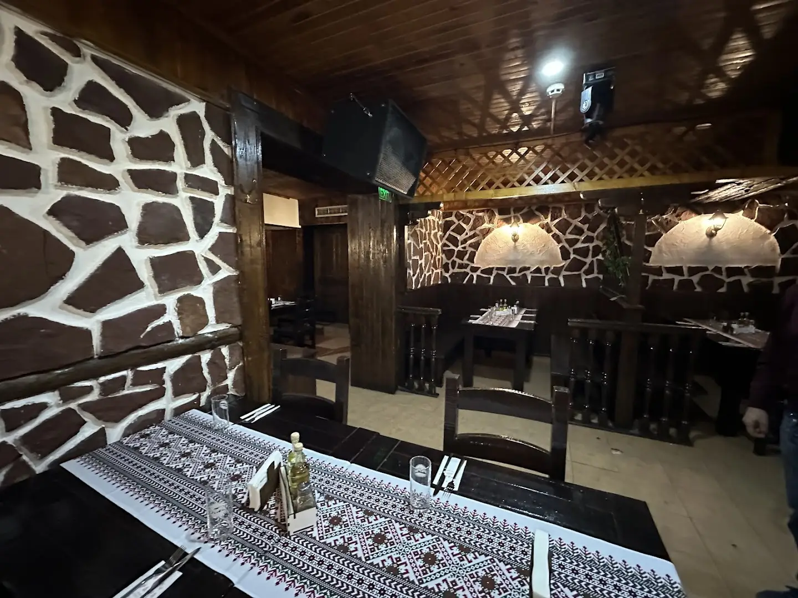
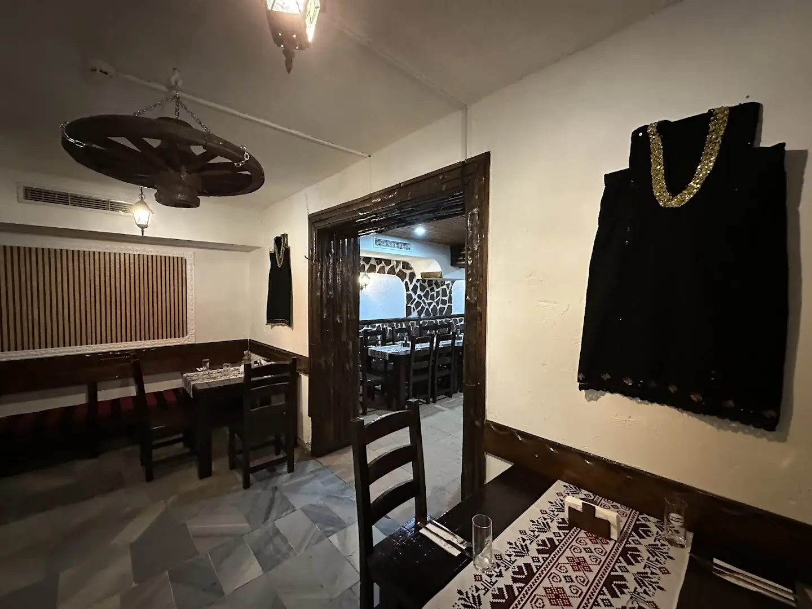
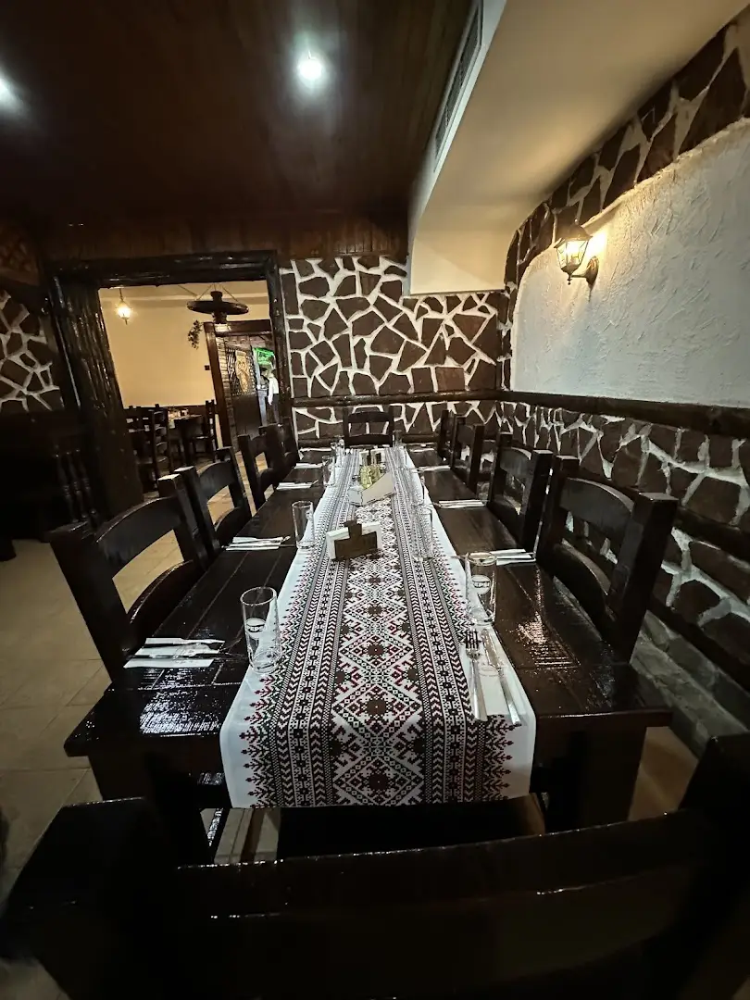
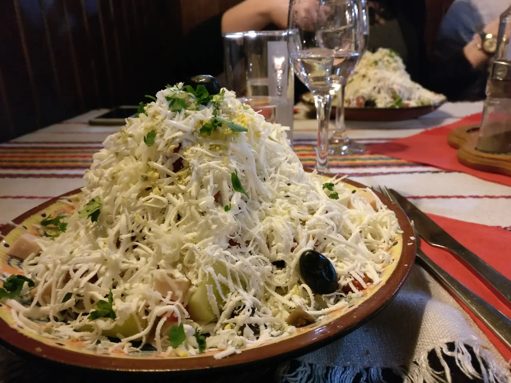
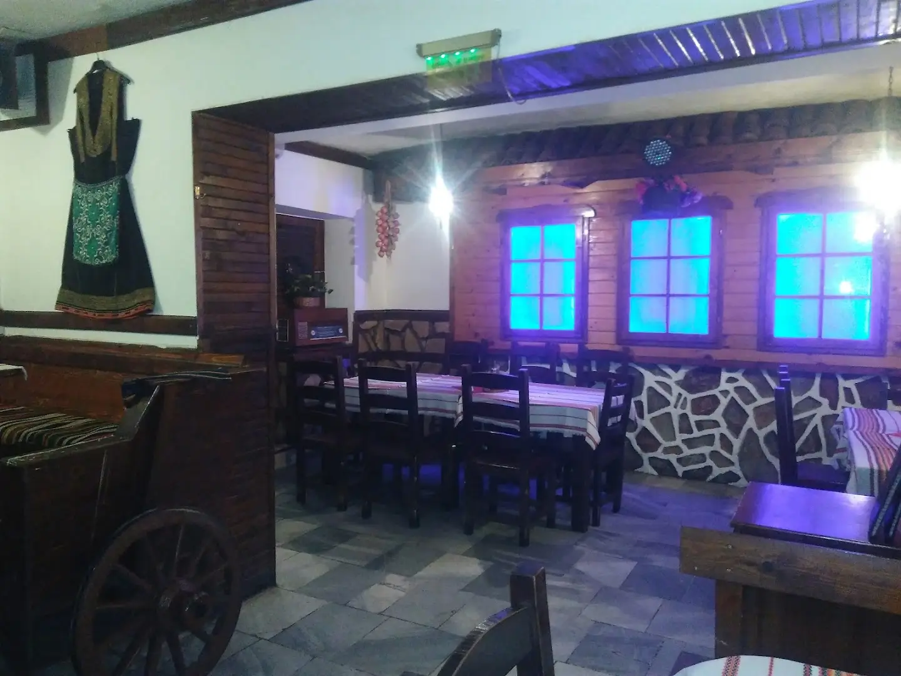
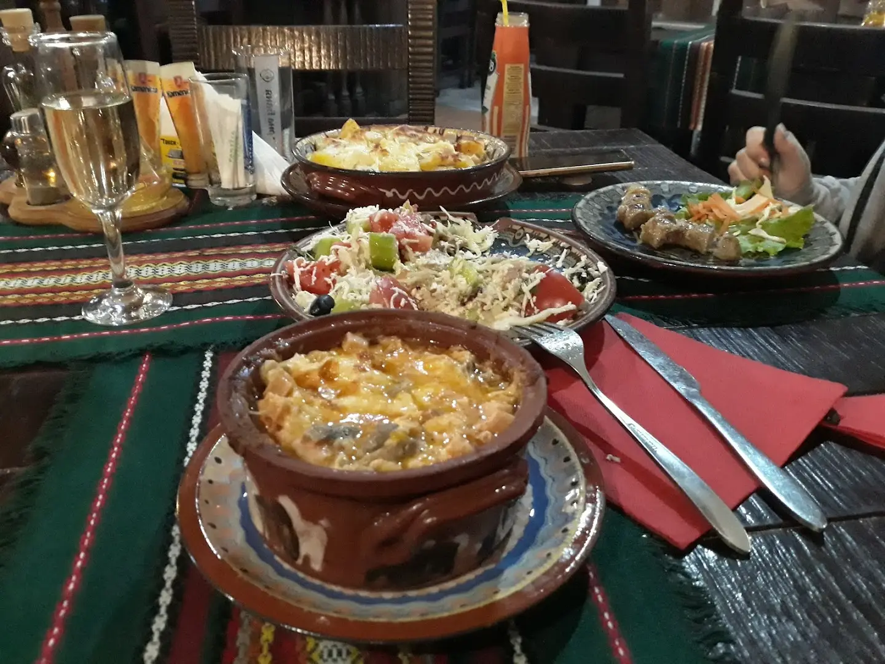
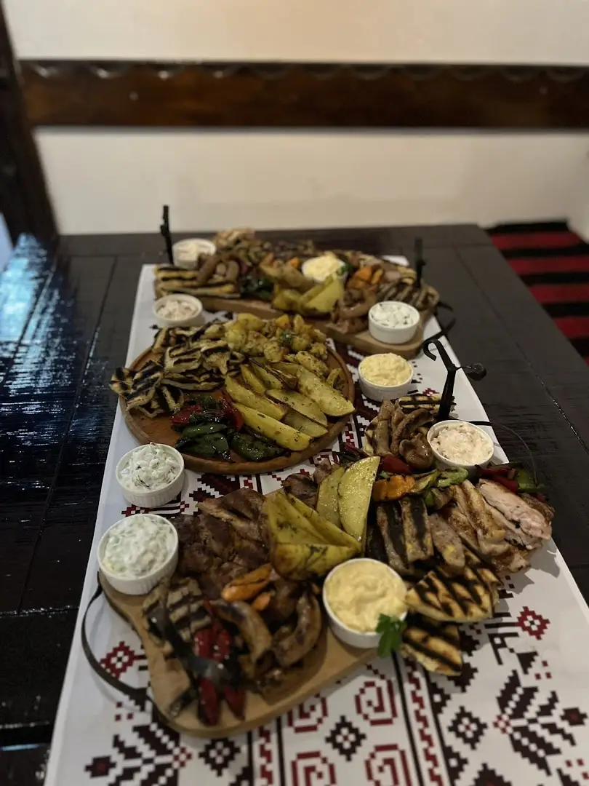
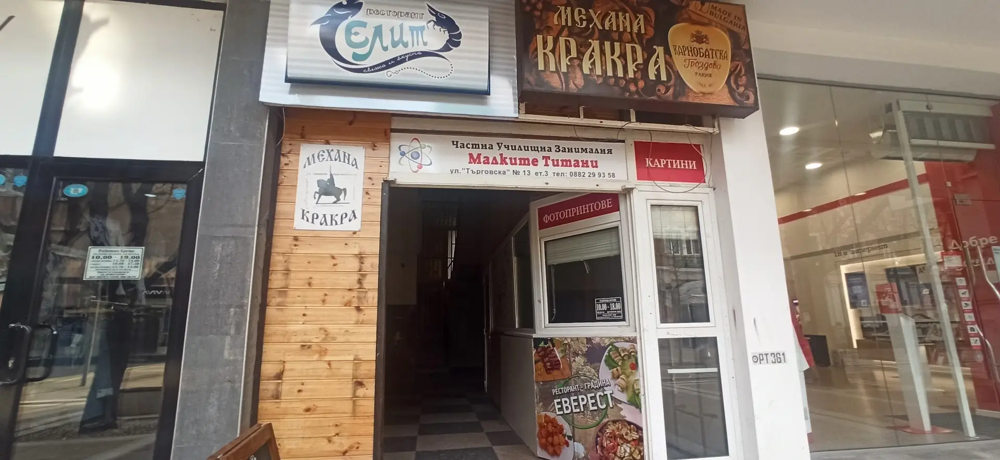

Автентична българска механа в сърцето на Перник.
Уютно битово кътче на ул. „Търговска“ 13 — вкусна домашна кухня, персонал в народни носии и топла обстановка от камък и дърво. Мястото за спокойна вечеря, среща с приятели или голямо тържество.
Добре дошли в Механа Кракра.
Механа Кракра е едно от най-автентичните битови кътчета в Перник — в самия център на града, на ул. „Търговска“ 13. Обстановката е изцяло в традиционен стил: каменни стени, тъмно дърво, чардаци с народни носии по стените и шевични покривки по масите.
Тук ще опитате вкусна българска кухня, която впечатлява с разнообразие и качество на ястията, поднесени в традиционни глинени панички — на достъпни цени. Персоналът в народни носии добавя своя чар към уютната и весела атмосфера.
Вечер залата се изпълва с жива музика, а всеки петък и събота — с DJ парти. Механата е подходяща за приятелски и семейни компании, за големи и малки тържества и поводи.

Механа с истински характер
Три причини перничани и гостите на града да се връщат отново и отново.
Домашна кухня
Вкусни български ястия с разнообразие и качество — поднесени в традиционни глинени панички, на достъпни цени.
Музика & настроение
Жива музика вечер и DJ парти всеки петък и събота — весела атмосфера за хубаво прекарване до късно.
За вашето тържество
Рождени дни, кръщенета и приятелски събирания — битова зала в центъра, подходяща за големи и малки компании.
Българска кухня, поднесена с обич
Ето какво да очаквате на масата — а пълното меню и цените към деня ще намерите в механата или по телефона.
Салати & мезета
Свежи салати с бяло саламурено сирене — сред тях и апетитната „снежанка“ — и мезета за начало на всяка хубава вечер.
Скара & аламинути
Скара, топли гозби и ястия в глинена паничка, приготвени по домашна рецепта и поднесени върху шевична покривка.
Плата за компания
Големи плата със скара, печени зеленчуци и разядки върху дървени дъски — идеални за споделяне на голяма маса.
Супи & десерти
Топли супи за начало и домашни десерти за финал — така, както отива на българската механа и живата музика.
Снимките са на храна и обстановка от механата (източник: публична галерия на заведението). Пълното меню, грамажите и актуалните цени ще намерите на място или при резервация по телефона.
Един поглед към механата
Битовата зала, трапезата и уютната обстановка, които ви очакват в Кракра.

Маса за компания
Салата „снежанка“
Битов кът
Наредена трапеза
Плата със скара
Заповядайте3,9 от 5 звезди
Над 360 мнения в Google. Ето какво най-често отбелязват гостите ни.
„Автентична битова обстановка и персонал в народни носии — точно както очакваш от една истинска механа.”
„Вкусна храна с богато разнообразие и на достъпни цени. Уютно и весело, идеално за компания.”
„В петък и събота има DJ парти и настроението е страхотно. Хубаво място за празник в центъра на Перник.”